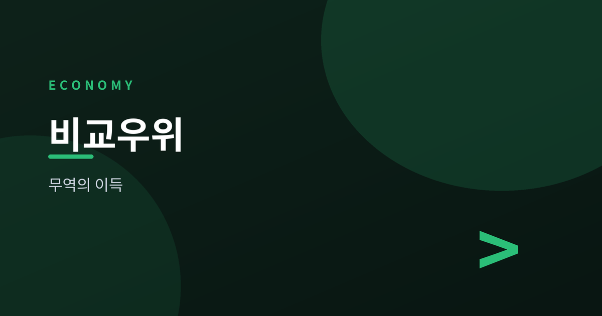
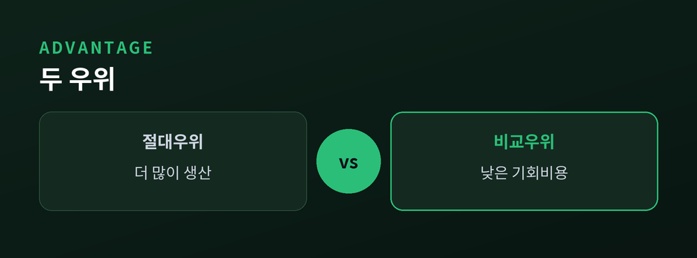
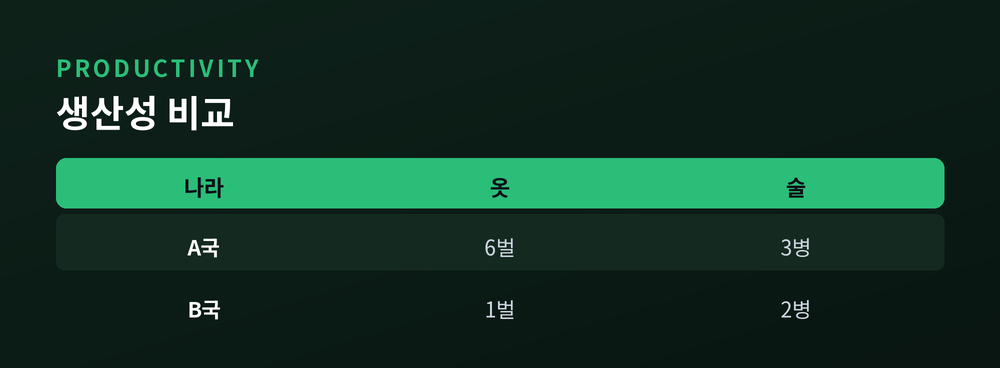
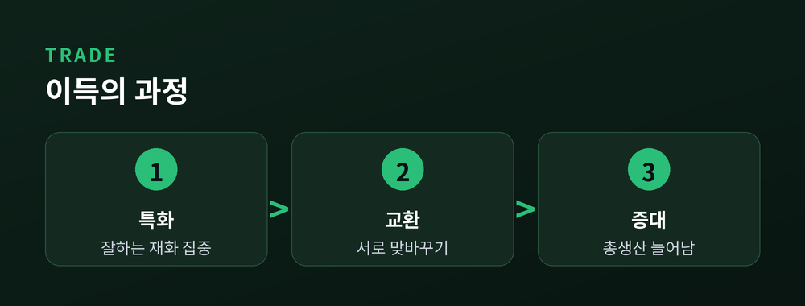
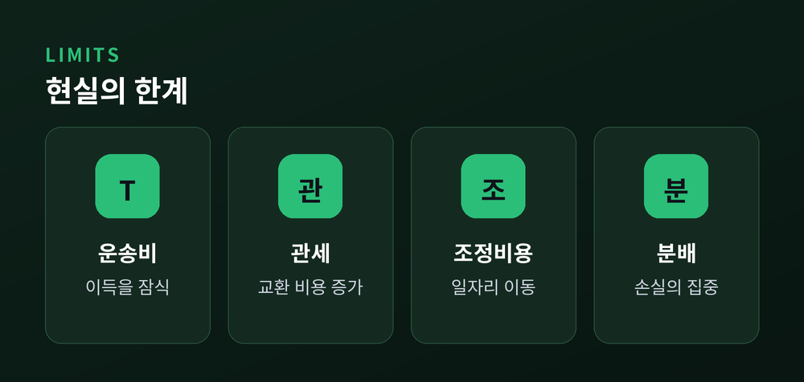

왜 모든 나라가 무역으로 이득을 보는가

이번 글에서는 리카도의 비교우위를 정리해 보겠습니다.
한 나라가 모든 것을 더 잘 만든다면, 그 나라는 굳이 무역할 이유가 없어 보입니다. 그런데 현실의 무역은 그런 나라끼리도 활발히 이루어집니다. 200년 전 리카도가 내놓은 답이 바로 비교우위입니다.
핵심은 "무엇을 더 잘하느냐"가 아니라 "무엇을 포기하고 만드느냐"에 있습니다. 하나씩 짚어 보겠습니다.
절대우위는 같은 자원으로 더 많이 만드는 능력입니다. 한 나라가 옷도 술도 더 싸게 만든다면, 두 재화 모두에서 절대우위를 가집니다.
여기서 흔한 오해가 생깁니다. 모든 것을 더 잘 만드는 나라는 무역할 필요가 없다는 생각입니다.
리카도는 아니라고 답합니다. 중요한 것은 비교우위, 즉 상대적으로 더 잘하는 분야입니다. 아무리 뒤처진 나라라도, 그나마 덜 뒤처진 분야는 반드시 있습니다.

비교우위를 재는 자는 기회비용입니다. 어떤 것을 만들기 위해 포기해야 하는 다른 것의 양입니다.
옷 한 벌을 만드느라 술 두 병을 포기해야 한다면, 그 옷의 기회비용은 술 두 병입니다.
두 나라가 같은 재화를 만들 때, 기회비용이 더 낮은 쪽이 그 재화에 비교우위를 가집니다. 절대적인 생산량이 아니라, 포기하는 양의 크기가 기준입니다.
바로 이 관점 덕분에, 모든 것에 뒤처진 나라도 반드시 어딘가에 비교우위를 가지게 됩니다.

| 옷(1인) | 술(1인) | |
|---|---|---|
| A국 | 6벌 | 3병 |
| B국 | 1벌 | 2병 |
A국은 두 재화 모두 더 많이 만듭니다. 그러나 A국이 옷을 포기하면 술이 적게 늘고, B국은 옷을 포기해도 잃는 술이 적습니다.
기회비용으로 보면 A국은 옷에, B국은 술에 비교우위가 있습니다. 각자 잘하는 쪽에 특화하고 서로 교환하면, 두 나라의 총생산이 늘어납니다.
놀랍게도 뒤처진 B국조차 이득을 봅니다. 무역은 승자와 패자를 가르는 싸움이 아니라, 함께 파이를 키우는 협업에 가깝습니다.

물론 교과서의 결론이 현실에서 그대로 실현되지는 않습니다.
운송비와 관세는 교환의 이득을 갉아먹습니다. 이득보다 비용이 크면 무역은 일어나지 않습니다.
산업 조정 비용도 있습니다. 특화 과정에서 사양 산업의 노동자는 일자리를 잃습니다. 나라 전체는 이득을 봐도, 그 손실이 특정 집단에 몰릴 수 있습니다.

그래서 비교우위는 "무역은 항상 옳다"는 구호가 아니라, 왜 교환에서 이득이 생기는지를 설명하는 틀로 읽어야 합니다.
정리하면, 절대우위가 아니라 기회비용이 무역의 방향을 정합니다. 각자 비교우위에 특화해 교환하면 모두가 이득을 봅니다. 다만 그 이득을 실제로 누리려면 비용과 분배의 문제를 함께 풀어야 합니다.